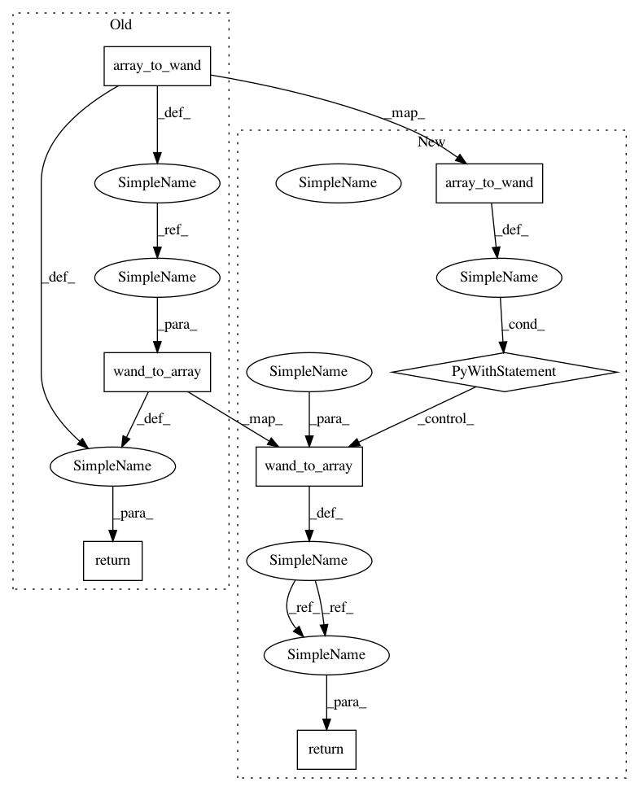

97aeda2a947c44cdef91d9276c2c38c02f37cda1,lib/data_augmentation.py,,random_half,#,38
Before Change
def random_half(src, p):
dst = iproc.array_to_wand(src)
if np.random.uniform() < p:
// "box", "triangle", "hermite", "hanning", "hamming", "blackman",
// "gaussian", "quadratic", "cubic", "catrom", "mitchell", "lanczos",
// "sinc"
filter = ("box", "box", "blackman", "cubic", "lanczos")
h, w = src.shape[:2]
rand = random.randint(0, len(filter) - 1)
dst.resize(w // 2, h // 2, filter[rand])
return iproc.wand_to_array(dst)
def random_shift_1px(src):
direction = random.randint(0, 3)
After Change
// "gaussian", "quadratic", "cubic", "catrom", "mitchell", "lanczos",
// "sinc"
if np.random.uniform() < p:
with iproc.array_to_wand(src) as tmp:
filter = ("box", "box", "blackman", "cubic", "lanczos")
h, w = src.shape[:2]
rand = random.randint(0, len(filter) - 1)
tmp.resize(w // 2, h // 2, filter[rand])
dst = iproc.wand_to_array(tmp)
return dst
else:
return src
In pattern: SUPERPATTERN
Frequency: 3
Non-data size: 7
Instances
Project Name: tsurumeso/waifu2x-chainer
Commit Name: 97aeda2a947c44cdef91d9276c2c38c02f37cda1
Time: 2017-02-08
Author: nstm101339@gmail.com
File Name: lib/data_augmentation.py
Class Name:
Method Name: random_half
Project Name: tsurumeso/waifu2x-chainer
Commit Name: 97aeda2a947c44cdef91d9276c2c38c02f37cda1
Time: 2017-02-08
Author: nstm101339@gmail.com
File Name: lib/pairwise_transform.py
Class Name:
Method Name: scale
Project Name: tsurumeso/waifu2x-chainer
Commit Name: 97aeda2a947c44cdef91d9276c2c38c02f37cda1
Time: 2017-02-08
Author: nstm101339@gmail.com
File Name: lib/pairwise_transform.py
Class Name:
Method Name: noise